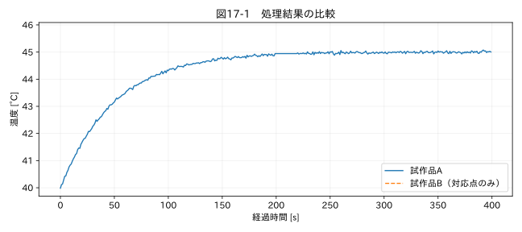

第V部 複数データの統合と品質管理 / 第17章
この章の節
異なる周期のデータを結合する
学習目標
完全一致の結合と時間近傍結合を使い分け、許容時間差と方向を設定する。結合後の行数、未対応数、対応時刻差を検証する。
17.1 結合できた表が正しいとは限らない
温度Aは毎秒、温度Bは2秒ごとに測り、Bの記録時刻は0.2秒後だった。時刻の完全一致で結合するとBはすべて欠損になる。一方、時刻を秒へ丸めて結合すると、境界次第で対応が変わり、同じ秒に複数観測があれば行数も増える。
試作品比較では時刻だけでなく、同じ運転条件にあるかも重要だ。Aの起動から20秒とBの時計上同じ時刻が、同じ状態を意味するとは限らない。絶対時刻、試験開始からの相対時刻、モード開始からの時間のどれで比較するかを先に決める。
17.2 mergeのキーと件数
merge はキーの等しい行を結び付ける。左に同じキーが2行、右に3行あれば、many-to-many結合で6行になる。レコードが増えたことを追加測定と誤認しない。関係が一対一のはずなら validate='one_to_one'、右がマスタなら validate='many_to_one' を指定し、違反したら停止する。
キーには試験ID、試作品ID、チャンネル、セッションを含める。別の日の試験が同じ相対時刻0から始まっているとき、相対時刻だけで結ぶと別試験が混ざる。重複キーを見つけた場合、事前に代表化するか、そもそも別系列として扱うかを判断する。
17.3 merge_asofの方向
merge_asof は時刻などの順序キーで近傍を探す。backwardは左の時刻以下で最後の右行、forwardは左の時刻以上で最初の右行、nearestは最も近い右行を選ぶ。双方を結合キーの昇順にする必要がある。R9 並べ替え前の時間軸検査は第5章で済ませておく。
運転イベントから現在の状態を付けるなら、通常はbackwardを使う。nearestでは、未来の設定変更を過去へ適用することがある。リアルタイム予測にforwardやnearestを使う場合も、未来情報の混入に注意する。オフラインで同時刻の測定を比較するならnearestが適する場合がある。
17.4 toleranceと対応時刻の保存
許容時間差toleranceを指定しないと、非常に古い値が対応することがある。許容差は対象の変化速度と必要精度から考える。温度が0.01 °C/sで変わり、時刻差由来の誤差を0.02 °C以内に抑えたいなら、単純な局所近似では2秒以下が一つの目安になる。ただし曲率やイベント、センサー応答も考慮する。
右側の時刻列を tb のように残し、t−tb を計算する。これにより対応の距離が見える。右の観測が複数の左行へ再使用される場合、独立な観測数は増えない。nearest結合は通常、一対一の割り当て問題を解いているわけではない。
関連する詳細実験は実践補講に掲載。入力形式・同期・補間・校正・多変量・チャンク境界を扱う。
実行するコードと結果
run.py · 共通処理の全ソース
教材フォルダで python examples/chapter17/run.py を実行。以下は省略のないスクリプト。共通モジュールは教材一式に含む。
from pathlib import Path
import sys
ROOT=Path(__file__).resolve().parents[2]
sys.path.insert(0,str(ROOT))
sys.path.insert(0,str(ROOT/'examples'))
import numpy as np
import pandas as pd
from common import load,truth,seconds,plot
from tsclean.core import numeric,timestamps,time_flags,hampel,freeze_candidates,interpolate_short,compare
df=load('09_prototypes');a=pd.DataFrame({'t':pd.to_datetime(df['時刻'],utc=True,format='ISO8601'),'a':df['測定値']})
b=pd.DataFrame({'tb':a.t[::2]+pd.Timedelta(milliseconds=200),'b':df.prototype_B[::2]})
m=pd.merge_asof(a,b,left_on='t',right_on='tb',direction='nearest',tolerance=pd.Timedelta(milliseconds=400))
print('左行数保持:',len(m)==len(a),'未対応:',int(m.b.isna().sum()))
print('最大対応時刻差 [s]:',float((m.t-m.tb).dt.total_seconds().abs().max()))
plot(17,seconds(df),{'試作品A':m.a,'試作品B（対応点のみ）':m.b},'温度 [°C]')
検証環境での実行結果を開く
左行数保持: True 未対応: 200
最大対応時刻差 [s]: 0.2

17.5 結合結果を検査する
図17-1ではBが対応した時刻だけに値が現れる。本章の許容差は0.4秒で、Bの測定間隔は2秒なので、Aの400点のうち200点が未対応になる。これは意図した結果である。欠損を減らすために許容差を広げると、古い値との比較が増える。
検査項目は、左行数の保持、キーの範囲、未対応数、対応時刻差の最大値と分布、右側レコードの再使用数、モードの一致である。結合前後の相関が高くなったことだけを品質改善としない。時間合わせや補間の方法が相関そのものを変えるためだ。
演習
基礎演習
未対応数と最大対応時刻差を確認する。
応用演習
許容差を1秒へ増やす。対応数が増えたとき、右側の同じ観測が何回使われるかを調べる。
実務演習
10:00にモードが冷房から停止へ切り替わった。09:59:59.9の観測へ状態を付けるとき、nearestとbackwardのどちらを選ぶか。
演習解答・解説を表示する
基礎：未対応は200点、対応時刻差は0.2秒。左の400行は保持される。
応用：隣のB観測が他のA行にも使われる。対応数増加は情報量増加ではない。右行の識別子を集計して再使用を確認する。
実務：イベントが変更時刻を表し、状態が次の変更まで継続する仕様ならbackward。09:59:59.9には変更前の状態を適用する。
章末まとめ
結合はデータの意味を対応付ける操作である。キー、方向、許容差、未対応、再使用を明示し、単に欠損が減ったことを成功としない。